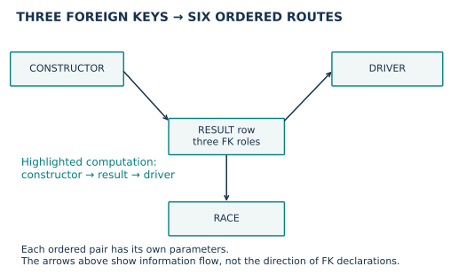
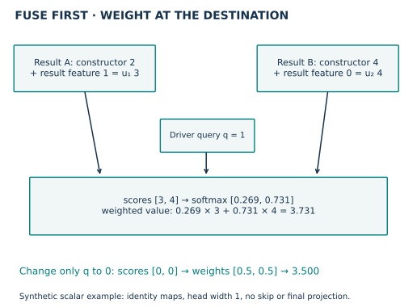
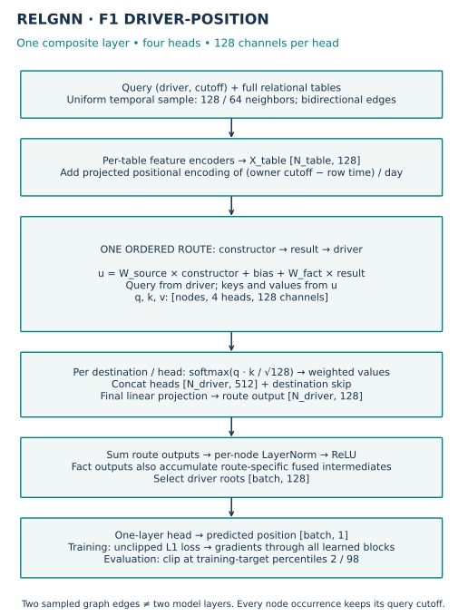
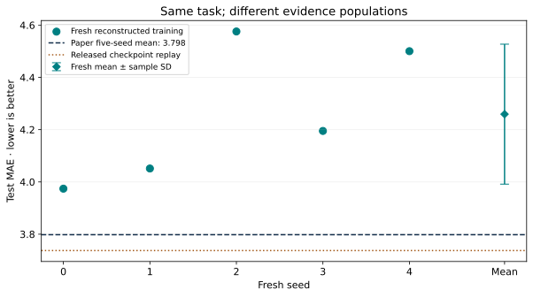

Year 4 · Quarter 3 · Lesson 141
Composite message passing: trace an atomic route
1 · Choose what gets combined before choosing how to combine it¶
Lesson 140 established an evidence discipline: keep the task, model, selection rule and query identities visible. It left the model itself unchanged. Now we change the unit of a message.
A relational entity graph represents a database row as a node. A foreign key creates a link from that row to a row in another table. In Formula 1, one result row identifies a driver, a constructor and a race. The constructor is the team responsible for the car. To send constructor information to a driver, an ordinary edge-based network traverses constructor → result → driver.
In plain terms. Instead of first mixing every neighbor into one result representation, construct a result representation for the particular source–destination pair you want to communicate. Then let the driver weight those messages. That pair-specific update is the mechanism we will implement.
Your tangible win: trace one complete composite update, explain its tensor dimensions, and distinguish a checkpoint replay from reconstructed fresh training. Read the core lesson in one sitting; use a separate lab session for the code and written defense. Primary reading: RelGNN, ICML 2025, §§4.1–4.3. The runnable details below follow the pinned released code.
Retrieve before reading: what does a foreign key identify? Why are two forecasts for one driver at different dates two distinct queries? Which split may select a checkpoint?
2 · Derive atomic routes from foreign key roles¶
A schema lists the tables and their key relationships. A route specifies the table types and foreign key roles used to carry a message. It is a recipe shared across many concrete row paths.
An atomic route is one complete interaction unit in this model. “Atomic” refers to the update, not to an indivisible graph edge. A composite route still uses two physical edges.
One foreign key. The released route builder emits a direct route in each direction. For example, races.circuitId points to circuits.circuitId, so the direct routes are race → circuit and circuit → race. Count forward foreign key roles only; the graph's reverse edges are conveniences for propagation, not additional database constraints.
Two or more foreign keys. The intermediate row is a fact: a record of an event or relationship. Tables it references play the endpoint roles. For each ordered pair of different foreign key roles, emit source → fact → destination. A two-key bridge yields two routes. A three-key hub yields six: there are three destination choices and two remaining source choices for each.
Worked example. A result row has driver, constructor and race keys. One route sends constructor information through the result to the driver. Another sends race information through the result to the driver. Their learned parameters are separate. A route from constructor to driver and its reverse are also separate.
The general count is k × (k − 1) for a fact with k ≥ 2 foreign key roles. It is a schema count, not the number of sampled messages. Missing references can remove concrete row paths. Two different roles can reference the same table, such as home team and away team; they still identify different routes. Route construction source
Predict: how many routes does a four-key fact create? Would adding stored reverse edges double that number?

TODO 1 — get_atomic_routes. Produce the released route tuples. A composite tuple stores the fact→destination attention edge first, then the source→fact fusion edge. That storage order is not the direction of the whole information path. The CHECK tests direction, role identity, reverse-edge handling and ordinary one-key routes. Your function constructs the routes used by the real model below.
Scope check. The release includes special handling for self-referencing tables. Keep it in the implementation and source audit; the F1 worked example does not require a self-reference. Schema-derived routing does not itself establish useful predictive signal.
3 · Fuse one source role with the fact row¶
A representation is a vector of learned numerical features. Let s be the source vector, f the fact-row vector and d the destination vector. The fact still contributes its own attributes; the route does not turn it into an empty edge.
For the selected released variant, the intermediate representation is:
u = W_source · sum(source neighbors) + b_source + W_fact · f.
Here W denotes a learned linear map; b is a learned offset. The source sum collects only the source role belonging to this ordered route. A valid nonmissing foreign key has one parent, so that sum usually contains one source vector. A missing sampled edge gives a zero source sum; the fact-root term remains. These operations reproduce the released GraphSAGE fusion, including its bias and root contribution. Composite operator source
Worked example — deliberately scalar. Two historical result rows point to the same driver. Their constructor coordinates are 2 and 4; their result coordinates are 1 and 0. Set both linear weights to 1 and the bias to 0. The fused messages are then 3 and 4. This arithmetic is an illustration, not a measured F1 embedding.
The race role has its own route. It is not mixed into the constructor→result→driver intermediate above. The final driver representation may still include race information through other routes. “Pair-specific” does not mean “the entire network ignores every other table.”
An ordinary two-layer heterogeneous GNN may mix the source, destination and other roles into the intermediate before returning information to the destination. RelGNN changes where that mixing occurs. We will study failure examples more deeply in Lesson 142; a diagram alone cannot establish that one model must win.
4 · Let the destination weight its incoming messages¶
Attention assigns learned weights to incoming vectors. The destination supplies a query vector. Each fused intermediate supplies a key and a value. Queries and keys determine weights; values supply the content that is averaged.
For head h and an incoming fact j, the selected implementation computes:
q_h = W_query,h d + b_query,h
k_jh = W_key,h u_j + b_key,h
v_jh = W_value,h u_j + b_value,h
score_jh = dot(q_h, k_jh) / sqrt(128)
alpha_jh = exp(score_jh) / sum_incoming exp(score_h)
message_h = sum_incoming alpha_jh * v_jh
A head is a separate learned query/key/value projection. The denominator ranges over incoming edges to this destination, within this route and head. It does not range across the whole batch, across heads or across routes. Subtracting the largest score before exponentiation preserves the ratio and prevents overflow.
Continue the scalar example. Use identity key/value maps and a one-dimensional query of 1. The scores are 3 and 4; the scale is sqrt(1) in this illustration. Softmax gives approximately 0.269 and 0.731, producing 3.731. With query 0, both scores are equal: the result becomes 3.500. The source messages are unchanged; only the destination's weighting changes.
Predict: will raising the query emphasize the larger fused value? Will adding an unrelated race coordinate alter this particular route's calculation?

TODO 2 — destination_softmax. Normalize scores separately by destination and head. The CHECK uses two destinations, extreme scores, an unused destination, permuted edges and an empty edge set. The full attention forward pass calls your function, so a globally normalized answer changes the trained model.
The real operator concatenates four 128-channel head outputs to 512 channels, adds a learned destination skip vector of that width, and projects back to 128 channels. The skip supplies a direct route for the destination's current state. This release does not divide a total width of 128 into four 32-channel heads. Visible arithmetic · Released operator
5 · Model architecture: one composite layer, two sampling hops¶

Input. Each query is (driver_id, cutoff). A temporal sampler gathers a neighborhood using fanouts 128 and 64: the maximum requested neighbors per edge type at each of two sampling hops. The selected release uses uniform sampling and a bidirectional sampled subgraph. Each sampled node occurrence retains the query that owns it.
Encode. Each table has its own row encoder. Categorical, numerical, timestamp and text features are mapped into a 128-channel row vector using the released PyTorch Frame stack. Text uses fixed GloVe word embeddings. A learned projection of a positional encoding adds the time difference between the query cutoff and the row timestamp, measured in days. Untimestamped tables do not receive that temporal term. Encoder source
Route. Each atomic route uses its own parameter set. Composite routes first fuse a source role with a fact, then attend from fact to destination. Direct routes skip fusion. The release also sends each composite route's fused intermediate to the fact table's output accumulator; omitting that update changes the model.
Update. Sum outputs targeting the same table. Normalize each node vector across its channels, then apply ReLU, which replaces negative coordinates by zero. This is one model layer, although a composite message used two sampled graph edges. Model depth and sampler depth are different settings. Stack · Route dispatch
Predict and train. Select the driver roots and apply the released one-layer prediction head to obtain one scalar per query. L1 loss is the mean absolute error between predictions and training targets. Gradients update the row encoders, temporal projections, composite operators and head. At evaluation, clip predictions to the training targets' 2nd–98th percentile range. Training loss uses unclipped predictions.
Scope check. Passing a timestamp test proves legality under the released event clocks. It does not supply missing historical arrival times or prove prospective feature availability. Atomic routes never authorize skipping either edge's owning-query cutoff.
Trace check: explain why the picture contains two graph edges but one composite layer. Identify where the fact's features enter, where the destination affects attention, and where different routes finally meet.
6 · Reproduce what the available evidence actually specifies¶
Task meaning. The target averages recorded finishing positions in (cutoff, cutoff + 60 days]. A driver needs an observed race result in that future window to receive a label; no future participation is not a zero finishing position. This is a benchmark population conditional on future participation, not a ready-made prospective roster of every driver. The independent audit rebuilds all 8,712 labels from raw result rows.
Our named target is RelGNN, rel-f1/driver-position, Table 2: 3.798 test MAE. Lower is better. The paper reports a five-seed mean. Its released entry point instead downloads one checkpoint and evaluates it. The complete historical training recipe and five individual training histories are not supplied. Paper Table 2 · Released entry point
We therefore keep three evidence columns: the paper's reported mean, a full-data replay of the released checkpoint, and five fresh runs under a frozen reconstruction. A close replay does not become five fresh fits; five fresh fits with documented choices do not become the historical training protocol.
| Decision | Released evidence | This reconstruction |
|---|---|---|
| Architecture | 1 composite layer, 128 channels, 4 heads, sum | Preserve |
| Sampling | Uniform 128/64, bidirectional, batch 512 | Preserve |
| Data / features | Complete F1 task; historical type cache absent | Checksum archives; freeze fresh inference; document replay override |
| Objective | L1 in paper / entry point | Preserve |
| Optimizer / schedule | Historical recipe unavailable | Adam 0.005, 10 full epochs |
| Runs | Paper averages 5 seeds | Fresh seeds 0–4 |
| Checkpoint selection | Historical history unavailable | First strict minimum validation MAE |
| Prediction clipping | Training-target percentiles 2 and 98 | Preserve |
Checkpoint preprocessing gap. Fresh type inference treats qualifying.position as categorical. The released checkpoint instead requires two numerical qualifying features. Its saved means and standard deviations match number and position, in that order. The initial unmodified replay fails strict weight loading. We retain that failure, rematerialize only this table with numerical position, and label the new lane CHECKPOINT_COMPATIBILITY_REPLAY. This is an evidence-backed reconstruction of one missing type choice; the historical type cache is still unavailable. Fresh training keeps the originally frozen inferred types. The two lanes therefore do not have identical feature semantics.
Gradient-health gap. The real numerical encoder can have nonfinite parameter gradients while yielding finite predictions. A clean synthetic fixture does not establish healthy optimization on missing real values. On a real training batch, 640 nonfinite numerical-weight gradients had identical masks in the original implementation; finite gradients agreed within 2.4×10⁻⁷ after matching dropout RNG. We preserve that behavior in these runs; a sanitized encoder would be a new experiment.
The fresh runs are RECONSTRUCTED_TRAINING. No seed is dropped because it is inconvenient. Test scores never select the epoch, learning rate or a retry. All training rows are visited in every epoch. The initial full seed is also the timing pilot. A predeclared ±0.20 MAE band is only a descriptive comparison with the paper scalar; it is not an equivalence test. Exact historical reproduction remains NOT_ESTABLISHED regardless of the score.
TODO 3 — keyed_mae. Align finite predictions by the complete unique (driver, cutoff) key, then compute absolute errors. Reject missing or duplicate keys. The default notebook deliberately shuffles every real prediction vector before scoring it with your function.
Predict before inspecting results: if the checkpoint is close but fresh reconstructed fits vary, what has each lane established? What evidence would be needed to claim a causal improvement over the old baseline?
| Evidence lane | Validation MAE | Test MAE | What was executed |
|---|---|---|---|
| Published Table 2 | — | 3.798 | Reported five-seed mean |
| Checkpoint-compatible replay | 2.836661 | 3.737381 | One released set of weights; reconstructed qualifying types |
| Fresh reconstruction, five seeds | 3.216126 ± 0.095152 | 4.259311 ± 0.267820 | Ten full epochs per seed; sample SD |
All 7,554 held-out predictions independently aligned and rescored. Fresh score comparison: OUTSIDE_TOLERANCE. Historical training: NOT_ESTABLISHED. Whole paper: NOT_RUN.

These results are conditional on one task and fixed splits. Earlier lessons have already used this public test set; it is not a new pristine holdout. A fresh controlled baseline comparison would be required to attribute a gain to routing alone. A full 30-task paper reproduction is outside this selected experiment. Protocol, commands, cost and deviation ledger
7 · Implement, explain, return later¶
Open the student notebook. It contains the model and trainer in annotated code sections, with portable figures. Implement the three TODOs and run each CHECK. The default CPU lane uses synthetic operator examples and independently re-scores author evidence. The explicit full-data gate runs preprocessing, checkpoint replay and fresh training in the pinned GPU environment.
EXIT — write before consulting the reference. Draw one constructor→result→driver update. Include the fact-root term, destination query, normalization set, four-head dimensions and output projection. Explain why one model layer needs two sampling hops. Then write two separate sentences describing the checkpoint evidence and reconstructed training evidence. Name what neither establishes.
Return tomorrow and reconstruct the route-count rule and attention denominator from memory. Next week, revisit the keyed-metric exercise with shuffled predictions. Lesson 142 examines many-to-many failure mechanisms; Lesson 143 extends the RelGNN reproduction work. This lesson's author execution does not complete those units or establish your mastery.
One-page reference · Executed teacher notebook. Ask the agent follow-up questions, or paste your EXIT explanation for feedback. Learner status remains PENDING_WRITTEN_DEFENSE until that explanation is assessed.
Carry this forward. Keep the scalar source–fact–destination example. Lesson 142 uses controlled input changes to show exactly what an ordinary update can mix or repeat. Continue to Lesson 142.